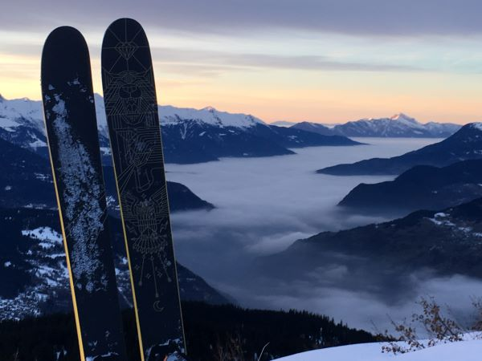
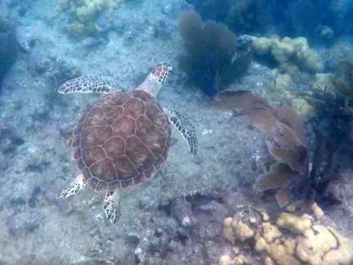

Hi, I'm James, a trainee full-stack web developer with futureproof.
In school maths and science, especially physics, were my strongest and favourite subjects. Solving problems was always something I enjoyed and was good at, I competed in the UKMT maths challenges between years 6 and 13, achieving gold every time and qualifying for further rounds 3 times, including 1 olympiad. Those subjects, along with STEM projects and residential weeks meant I really wanted to study engineering at university. I applied and was accepted on to the Engineering Science course at the University of Oxford, which had a massive advantage for me of not specialising until I had completed 2 years of study.
In third and fourth year, I could choose my modules and projects and I was more interested in the control and information engineering side, with some biomedical engineering thrown in to appease my healthcare family (2 vets and a nurse). In the fourth year, I got to choose a project for my Master's dissertation and I choose to work on a project much more in line with information engineering, implementing and then developing multi-agent path finding artificial intelligences with the Oxford Robotics Institute.
That was it, that project was what sucked my down the rabbit hole of software development as a career. Working with a professor and a PhD student, I was able to take charge of my own learning and set my own targets for my project, breaking it up week by week and steadily improving my knowledge of the subject and my skills at coding in python. Towards christmas, I was able to contribute to a different PhD students research by sending her one of the algorithms that I had implemented to work on the institute's codebase. I hit all the targets that I had set with my supervisors at the start of the year, with the end product being able to plan paths for multiple robots in the same environment taking in to account inertial constraints, continuous time, edge-convoying and heterogeneous robots, both in terms of size and dynamics. This was a very successful project, we compared it to the nearest available method, continuous conflict based search. It it performed significantly better on a test scenario that was roughly midway between the problems the comparison AI was designed to solve and the type of problem my AI was designed to solve.
I am now attending the futureproof course to develop my skills but also introduce me to new concepts and ideas like testing, deployment and collaborative working. I now see myself as a much more rounded developer given the skills futureproof has given me.
My hobbies are outdoor pursuits like climbing, cycling, skiing, windsurfing and hiking. Duke of Edinburgh and Ten Tors were some of my favourite school trips, as well as cycling trips several times a year for every year of my life. I practically grew up in the saddle.
I've taken my love of outdoor pursuits and tried to pass it on, working at summer camps focused on outdoor pursuits volunterilly with the YHA and also working at a summer camp in America running the high ropes course. This also gave me the oppurtunity to go to the Florida Keys after I finished and go snorkelling, an amazing experience.